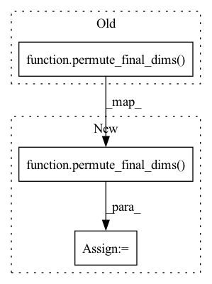

Pattern ID :836
Before Change
permute_final_dims(k, (1, 2, 0)), // [*, H, C_hidden, N_res]
)
a = a * math.sqrt(1.0 / (3 * self.c_hidden))
a = a + (math.sqrt(1.0 / 3) * permute_final_dims( b, (2, 0, 1)) )
// [*, N_res, N_res, H, P_q, 3]
pt_att = q_pts.unsqueeze(-4) - k_pts.unsqueeze(-5)After Change
permute_final_dims(k, (1, 2, 0)), // [*, H, C_hidden, N_res]
)
a *= math.sqrt(1.0 / (3 * self.c_hidden))
a += (math.sqrt(1.0 / 3) * permute_final_dims( b, (2, 0, 1)) )
// [*, N_res, N_res, H, P_q, 3]
pt_att = q_pts.unsqueeze(-4) - k_pts.unsqueeze(-5)In pattern: SUPERPATTERN
Frequency: 3
Non-data size: 3
Instances Fragment ID: 2639177
Project Name: aqlaboratory/openfold
Commit Name: 1df4991d63cb3dbc2045c058968c57933e97d248
Time: 2022-02-03
Author: gahdritz@gmail.com
File Name: openfold/model/structure_module.py
M Class Name: InvariantPointAttention
N Class Name: InvariantPointAttention
M Method Name: forward(5)
N Method Name: forward(5)
M Parent Class: nn.Module
N Parent Class: nn.Module
M File Name: openfold/model/structure_module.py
N File Name: openfold/model/structure_module.py
M Start Line: 297
M End Line: 372
N Start Line: 297
N End Line: 374
Before Change
// [*, H, Q, K]
a = torch.matmul(
permute_final_dims(q, (1, 0, 2)), // [*, H, Q, C_hidden]
permute_final_dims( k, (1, 2, 0)) , // [*, H, C_hidden, K]
)
del q, kAfter Change
q = permute_final_dims(q, (1, 0, 2))
// [*, H, C_hidden, K]
k = permute_final_dims( k, (1, 2, 0))
// [*, H, Q, K]
a = torch.matmul(q, k)
Fragment ID: 2639178
Project Name: aqlaboratory/openfold
Commit Name: 497670998b5fdfd933cbdeb51fbc1673fe036162
Time: 2021-10-19
Author: gahdritz@gmail.com
File Name: openfold/model/primitives.py
M Class Name: Attention
N Class Name: Attention
M Method Name: forward(5)
N Method Name: forward(5)
M Parent Class: nn.Module
N Parent Class: nn.Module
M File Name: openfold/model/primitives.py
N File Name: openfold/model/primitives.py
M Start Line: 257
M End Line: 280
N Start Line: 257
N End Line: 283
Before Change
permute_final_dims(k, 1, 2, 0), // [*, H, C_hidden, N_res]
)
a *= math.sqrt(1. / (3 * self.c_hidden))
a += math.sqrt(1. / 3) * permute_final_dims( b, 2, 0, 1)
// [*, N_res, N_res, H, P_q, 3]
pt_att = q_pts.unsqueeze(-4) - k_pts.unsqueeze(-5)
pt_att = pt_att ** 2After Change
permute_final_dims(k, 1, 2, 0), // [*, H, C_hidden, N_res]
)
a = a + math.sqrt(1. / (3 * self.c_hidden))
a = a + math.sqrt(1. / 3) * permute_final_dims( b, 2, 0, 1)
// [*, N_res, N_res, H, P_q, 3]
pt_att = q_pts.unsqueeze(-4) - k_pts.unsqueeze(-5)
pt_att = pt_att ** 2
// [*, N_res, N_res, H, P_q]
pt_att = torch.sum(pt_att, dim=-1)
head_weights = self.softplus(self.head_weights).view(
*((1,) * len(pt_att.shape[:-2]) + (-1, 1))
)
head_weights = (
head_weights * math.sqrt(1. / (3 * (self.no_qk_points * 9. / 2)))
)
pt_att = pt_att * head_weights
// [*, N_res, N_res, H]
pt_att = torch.sum(pt_att, dim=-1) * (-0.5)
// [*, N_res, N_res]
square_mask = mask.unsqueeze(-1) * mask.unsqueeze(-2)
square_mask = self.inf * (square_mask - 1)
// [*, H, N_res, N_res]
pt_att = permute_final_dims(pt_att, 2, 0, 1)
a = a + pt_att
a = a + square_mask.unsqueeze(-3)
a = self.softmax(a)
//////////////////////////////// Fragment ID: 2639185
Project Name: aqlaboratory/openfold
Commit Name: ab0c6977435b670213392920dcd0b76f9ca90062
Time: 2021-09-25
Author: gahdritz@gmail.com
File Name: openfold/model/structure_module.py
M Class Name: InvariantPointAttention
N Class Name: InvariantPointAttention
M Method Name: forward(5)
N Method Name: forward(5)
M Parent Class: nn.Module
N Parent Class: nn.Module
M File Name: openfold/model/structure_module.py
N File Name: openfold/model/structure_module.py
M Start Line: 294
M End Line: 323
N Start Line: 295
N End Line: 326